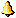

～ F一览 ～ ～ F一览 ～
| 写真 |
名称 |
对怪物效果 |
对西林效果 |
说明 |
|
び石 |
HP1点伤害 |
道具散乱、壶有可能破裂 |
― |
|
落石スイッチ |
HP7～9点伤害，防御力无视 |
― |
|
丸太F |
吹飞10格远的效果 |
― |
|
毒矢 |
HP10点左右的伤害
火炎入道系无效
正面战士系即死 |
HP、力量值下降1 |
― |
|
デロデロの |
即死，变为腐蚀饭团 |
未放入壶的饭团全部腐蚀 |
― |
|
空腹スイッチ |
即死，ポリゴン系升级 |
满腹度减10% |
― |
 |
落し穴 |
完全消灭 |
进入下一层，HP减5点 |
― |
|
地雷 |
即死，火炎入道系分裂；
チキン系变为肉 |
HP减为一半，原HP为1时死亡 |
― |
|
大型地雷 |
即死，火炎入道系分裂；
チキン系变为肉 |
HP减为1，原HP为1时死亡 |
― |
|
睡眠ガス |
睡眠5回合 |
― |
|
幻ガス |
逃走模式，效果无限回合 |
怪物、NPC变为美艳的MM
道具、F变为花 |
― |
 |
p速スイッチ |
一定时间内半速状态 |
― |
|
回板 |
9回合内混乱状态 |
― |
 |
トラバサミ |
5回合内无法移动，但可攻击 |
― |
|
バネ |
弹飞到别的房间 |
― |
|
装渫猡 |
封印特殊能力 |
身上装备全解除 |
― |
|
F |
防御力下降，火炎入道系即死
正面骑士系、カラクロイド系、
战车系减速，ミドロ系升级 |
装备中的盾强度减1 |
― |
|
警螗攻ぅ氓 |
睡眠的怪物全部清醒状态 |
― |
|  |
召茎攻ぅ氓 |
召唤出4个怪物，F损坏 |
召唤出4个怪物 |
― |
|
ワナのF |
F大量增加 |
― |
|
制バネ |
弹飞到别的房间，100%发动 |
― |
|
r限爆 |
与地雷同样效果 |
踏中之后3～6回合后爆发 |
隐藏F |
|
大部屋スイッチ |
？？？ |
该层变为大部屋 |
隐藏F |
|
おにぎりスイッチ |
？？？ |
西林变为饭团 |
隐藏F |
|
拾えずスイッチ |
？？？ |
该层不能拾起道具 |
隐藏F |
|
  
|